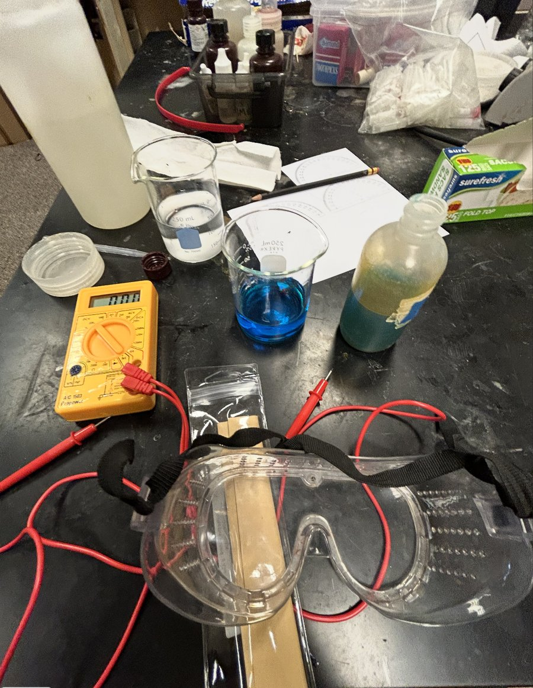
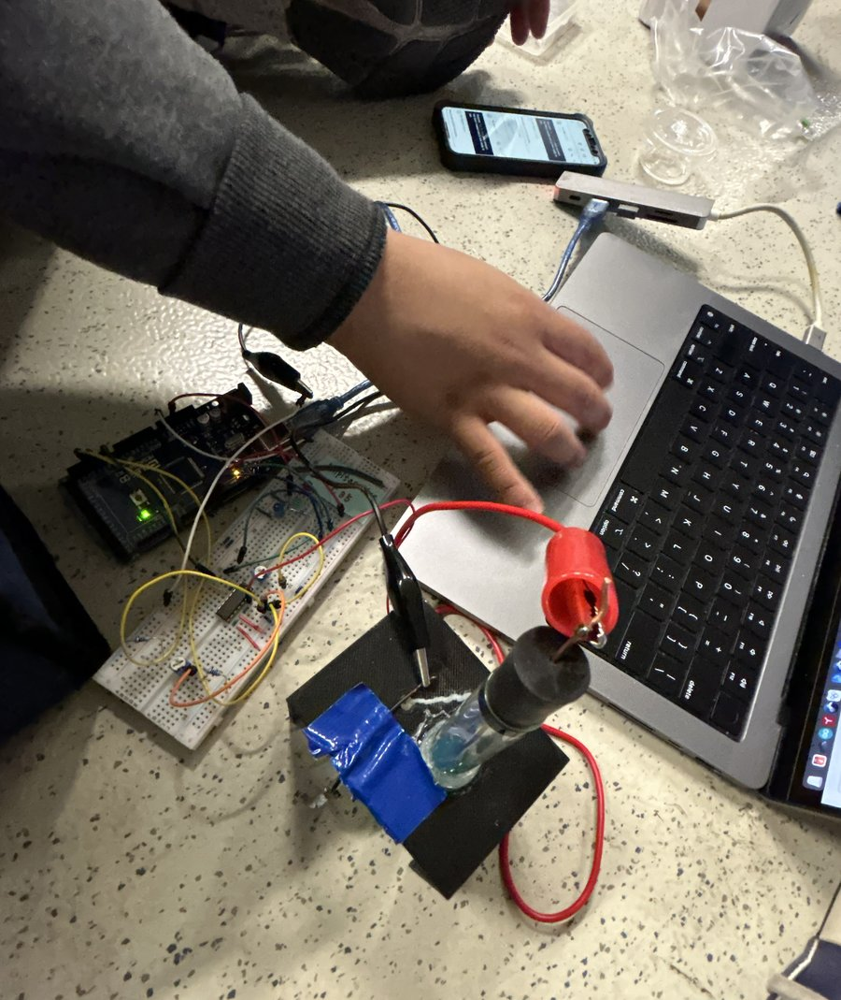
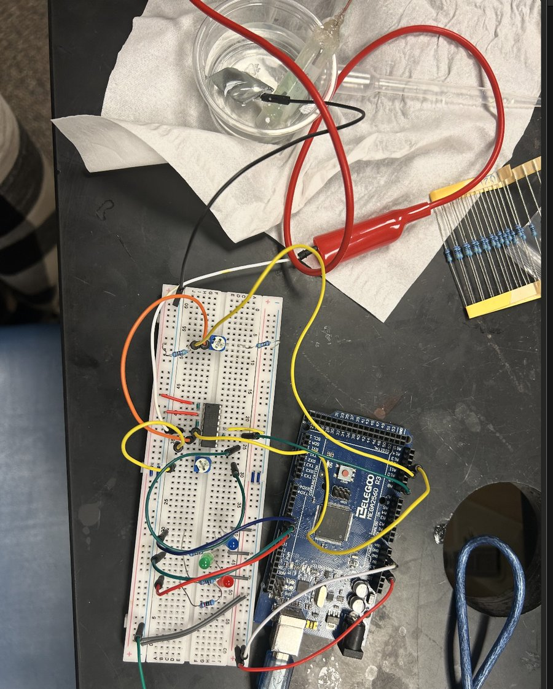
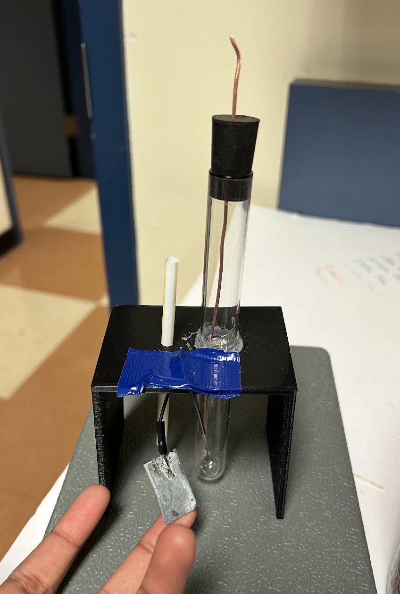
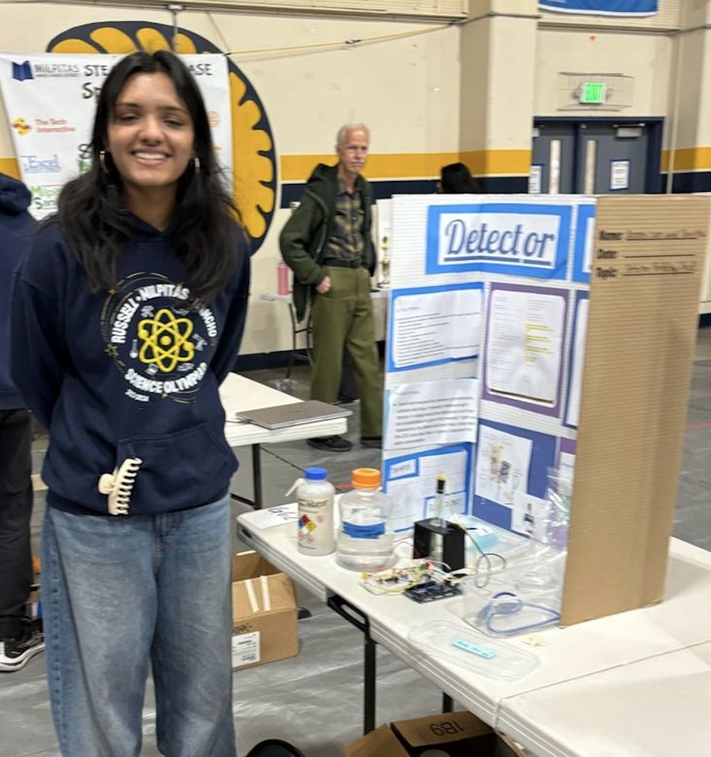

Salinity Detector
A portable device that measures the concentration of an unknown salt (NaCl) solution, using an electrochemical cell, an op-amp, and an Arduino that converts voltage to concentration from a calibration curve.

How it works
- The sensor is a battery. A copper wire sits in copper sulfate inside a sealed test tube, and a zinc plate sits in the unknown NaCl solution. A string soaked in potassium nitrate, run through a straw, acts as the salt bridge between the two. Together they form a galvanic cell whose voltage depends on the solution it's dipped in.
- Amplifying the signal. The cell sits near 0.9–1.05 V and changes by only a few millivolts between concentrations, finer than the Arduino's 4.9 mV ADC step. So the op-amp circuit subtracts a 0.91 V reference and amplifies only the difference, by ×37. That stretches the cell's useful range, about 0.91–1.045 V, across the ADC's full 0–5 V input.
- Voltage to concentration. An Arduino Mega reads the amplified voltage on an analog pin and converts it to a concentration using a calibration curve built from known solutions, then lights an LED for the concentration range.
Calibration
The device is only as accurate as its calibration. We measured the cell voltage with a multimeter across a set of solutions with known concentrations of NaCl and copper sulfate, and used those points to build the curve the code looks up. Because a cell like this drifts with temperature and electrode condition, we re-calibrated on competition day before testing unknowns.


Firmware
The Arduino code works backwards from the ADC reading to a concentration:
- Undo the amplifier: Vcell = VADC / 37 + 0.91 V. Each ADC step corresponds to about 0.13 mV at the cell.
- Apply the calibration fit: concentration (ppm) = a·eb·V, an exponential fit to our calibration measurements (a = 6.29×10−9, b = 27.16 V−1). That works out to about 85 mV of cell voltage per tenfold change in concentration, and a measurable range of roughly 340 to 13,000 ppm.
- Show the range: blue below 1,500 ppm, green from 1,500 to 3,500 ppm, and red from 3,500 to 10,000 ppm, updated twice a second and printed over serial.
float V = V_in / gain + V0; // undo the x37 amplifier and 0.91 V offset
double ppm = a * exp(b * V); // exponential calibration fitA separate calibration sketch measures the amplifier's real gain by reading its output and both of its inputs, which is where the ×37 comes from, rather than trusting nominal resistor values.
salinity_detector.ino · gain_calibration.ino
Iterations


The first version was spread across a bench. We then packaged it into a portable device, starting with a cardboard stand and ending with a 3D-printed one that holds the electrodes and salt bridge in a fixed position over the test cup. Fixed geometry matters here, since moving the electrodes changes the reading.
Presenting it
